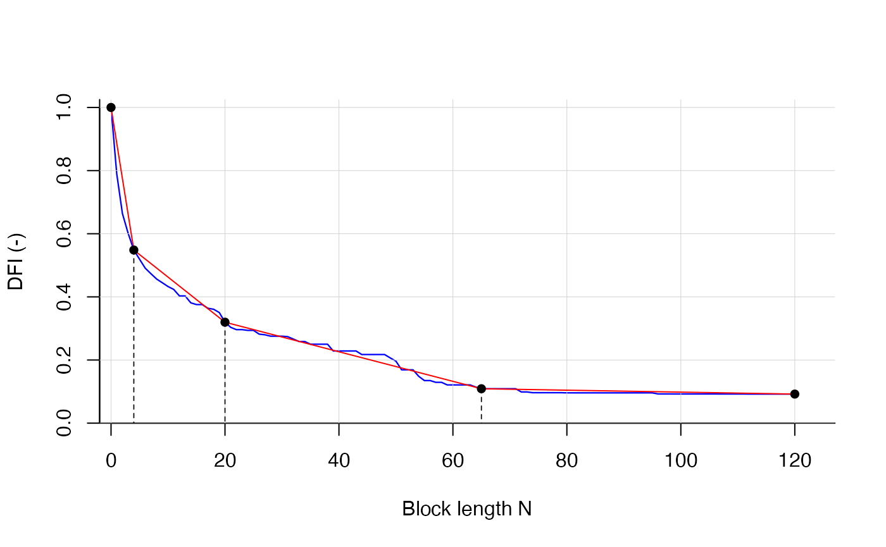

Load package and data
library(delayedflow)
q_obs <- q_data$q_obsCreate CDCs from DFI
Now see how the DFI curve looks like:
## n dfi
## 1 0 1.0000000
## 2 1 0.7898710
## 3 2 0.6637347
## 4 3 0.6014212
## 5 4 0.5483716
## 6 5 0.5194072
tail(cdc)## n dfi
## 116 115 0.09210385
## 117 116 0.09210385
## 118 117 0.09210385
## 119 118 0.09210385
## 120 119 0.09210385
## 121 120 0.09210385Finding breakpoints
bps <- find_bps(dfi = cdc$dfi,
n_bp = 3,
plotting = TRUE)## Calculating breakpoints...Done.
Looking at:
- the breakpoint estimates, here 4, 20 and 65 days
- output of the objective function
- relative streamflow contributions between
filter_min, the breakpoint(s) andfilter_max.
bps$bps_position## bp_1 bp_2 bp_3
## 4 20 65
bps$bias## [1] 0.01449936
bps$rel_contr## contr_1 contr_2 contr_3 contr_4
## 0.4516284 0.2286085 0.2107172 0.1090459Estimation of nmax
head(q_data)## date q_obs
## 1 2000-01-01 11.10
## 2 2000-01-02 11.20
## 3 2000-01-03 10.40
## 4 2000-01-04 9.74
## 5 2000-01-05 13.80
## 6 2000-01-06 12.80
find_nmax(q_data)## $index_value
## [1] 0.1126447
##
## $bp_nmax
## [1] 65The results show that breakpoints at 65, 66 or 45 days (depending on low flow threshold) lead to a DFI value that equals the threshold.
## n dfi
## 1 44 0.2173933
## 2 45 0.2173933
## 3 46 0.2173933
## 4 64 0.1144248
## 5 65 0.1090459
## 6 66 0.1090459
## 7 67 0.1090459